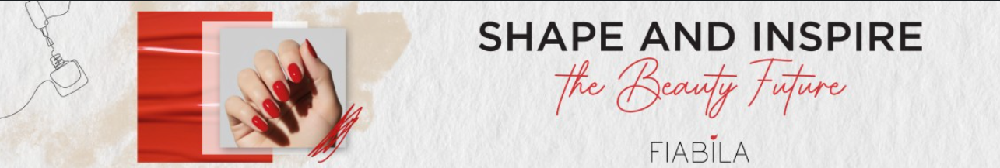
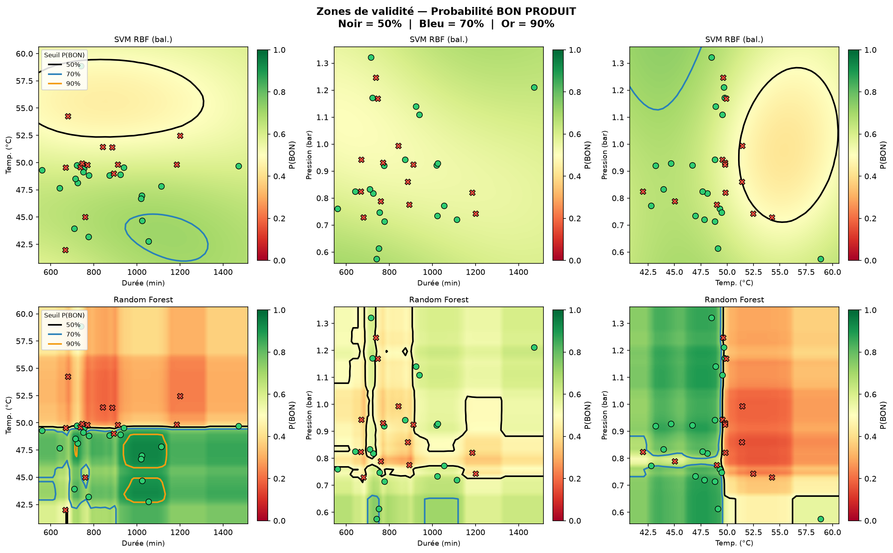

Marius Blanchet
Stage du 4 mai au 2 juillet 2026 — Fiabila, Maintenon
Ce n'est pas une impression. En février 2026, les 5 productions F4000 lancées ont toutes été refusées au laboratoire du premier coup — chacune a dû être recorrigée puis relancée.
| Date | Lot | Résultat labo | Action corrective |
|---|---|---|---|
| 02/02/2026 | 26.02.0521_1 | Refus Labo | +2,0 % AE |
| 11/02/2026 | 26.03.0731_1 | Refus Labo | Trop intense — coupage ~2,5 % base |
| 16/02/2026 | 26.04.0640_1 | Refus Labo | +1,5 % AE |
| 19/02/2026 | 26.04.0641_1 | Refus Labo | Double correction (+2 % AE ×2) |
| 25/02/2026 | 26.03.0732_1 | Refus Labo | Centri KO ×2 — mise en quarantaine |
Rassembler les lots passés du B430 — conditions de broyage et verdict bon / mauvais — et nettoyer les mesures manquantes.
Visualiser les lots en 3D et lire les courbes pour repérer ce qui sépare un bon lot d'un mauvais.
Comparer plusieurs méthodes de classification et mesurer laquelle prédit le mieux la qualité.
Traduire les résultats en zones de réglage sûres et en pistes concrètes pour la production.
Chaque sphère est un lot réel, positionné selon ses 3 paramètres. C'est exactement ce que le modèle exploite pour décider. Faites tourner le nuage à la souris.
Plusieurs algorithmes ont été testés. Chacun trace une frontière différente entre la zone « bon » et la zone « mauvais ». La surface ci-dessous est cette frontière — tout ce qui est d'un côté est prédit BON, de l'autre MAUVAIS. Changez de méthode pour comparer.
Pour chaque paire de paramètres, la carte montre la probabilité qu'un lot soit BON : vert = forte, rouge = faible. Les contours tracent les seuils 50 %, 70 % et 90 %. D'un coup d'œil, on lit la zone sûre — et on en déduit les réglages à viser.

Zone centrale des lots BON (intervalle interquartile observé) — les réglages à viser.
Une stack 100 % open-source, éprouvée et reproductible — qui tourne en interne. Aucune donnée de production n'est envoyée vers un service ou un cloud externe.
Aller plus loin — une IA de développement en interne : l'analyse elle-même n'utilise aucune IA. En revanche, le développement s'appuie sur des assistants IA, qui peuvent exposer du code ou des données à des services externes. Un projet mené avec une association de CentraleSupélec vise à faire tourner des LLM open-source sur des serveurs Fiabila, pour garder ce travail entièrement en interne — un gage de confidentialité.
Au-delà de la classification BON / MAUVAIS, trois chantiers pour aller plus loin.
Automatiser davantage la machine (Decobecq) pour que les opérateurs n'aient jamais besoin du mode forçage. Au démarrage, le produit est froid : on chauffe fort, donc l'intensité des paramètres est élevée. La conduite se régule ensuite jusqu'à un maintien stable, avant de redescendre en fin de broyage.
Le modèle ne connaît que les zones déjà produites. Sur la F400, on teste des points inédits — à l'échelle réelle, avec un filet de sécurité.
Objectif atteint progressivement, pas dès le départ.
Aujourd'hui le modèle s'appuie sur 3 mesures. En intégrer d'autres affinerait la prédiction.
Je suis à votre disposition pour vos questions.
Marius Blanchet · Stage ouvrier 2026 · Fiabila, Maintenon
Un lot refusé n'est pas jeté : il est rebroyé 6 h et recorrigé. Le surcoût, poste par poste, pour une cuve de 2 tonnes :
Hypothèses : SMIC juin 2026 = 12,31 €/h (opérateur ~17 €/h chargé) · électricité industrielle ~0,12 €/kWh · broyeur ~45 kW · produits ajoutés ~2 % de coupage (~120 €, à affiner) · labo = 10 laborantins validant ~100 produits/jour, soit ~0,7 h et ≈ 20 € par cuve.
~34 cuves de F4000 par an, dont 35 % refusées aujourd'hui (~12 cuves, soit ≈ 3 200 €/an de reprises). En faisant baisser ce taux :
+ ~31 h de broyeur libérées par an
+ ~51 h de broyeur libérées par an
Gain direct (reprises évitées). S'y ajoute un bonus capacité : les heures de broyeur libérées peuvent produire d'autres cuves — valorisable dès qu'on aura la marge du F4000. Estimation sur le F4000 seul ; elle se multiplie en l'étendant aux autres produits du B430.
Le gain complet additionne le coût évité et la valeur des heures de broyeur libérées — qui, elle, dépend du prix d'une cuve de F4000.
Il me manque deux nombres pour boucler : la marge (ou le prix) d'une cuve de F4000 et la durée normale d'un broyage. Avec eux, le gain capacité se chiffre — et c'est lui, pas le coût évité, qui rend l'investissement convaincant.